Choose any three.
|
|
Atomic Commit In SQLite
1.0 Introduction
An important feature of transactional databases like SQLite is "atomic commit". Atomic commit means that either all database changes within a single transaction occur or none of them occur. With atomic commit, it is as if many different writes to different sections of the database file occur instantaneously and simultaneously. Real hardware serializes writes to mass storage, and writing a single sector takes a finite amount of time. So it is impossible to truly write many different sectors of a database file simultaneously and/or instantaneously. But the atomic commit logic within SQLite makes it appear as if the changes for a transaction are all written instantaneously and simultaneously.
SQLite has the important property that transactions appear to be atomic even if the transaction is interrupted by an operating system crash or power failure.
This article describes the techniques used by SQLite to create the illusion of atomic commit.
The information in this article applies only when SQLite is operating in "rollback mode", or in other words when SQLite is not using a write-ahead log. SQLite still supports atomic commit when write-ahead logging is enabled, but it accomplishes atomic commit by a different mechanism from the one described in this article. See the write-ahead log documentation for additional information on how SQLite supports atomic commit in that context.
2.0 Hardware Assumptions
Throughout this article, we will call the mass storage device "disk" even though the mass storage device might really be flash memory.
We assume that disk is written in chunks which we call a "sector". It is not possible to modify any part of the disk smaller than a sector. To change a part of the disk smaller than a sector, you have to read in the full sector that contains the part you want to change, make the change, then write back out the complete sector.
On a traditional spinning disk, a sector is the minimum unit of transfer in both directions, both reading and writing. On flash memory, however, the minimum size of a read is typically much smaller than a minimum write. SQLite is only concerned with the minimum write amount and so for the purposes of this article, when we say "sector" we mean the minimum amount of data that can be written to mass storage in a single go.
Prior to SQLite version 3.3.14, a sector size of 512 bytes was assumed in all cases. There was a compile-time option to change this but the code had never been tested with a larger value. The 512 byte sector assumption seemed reasonable since until very recently all disk drives used a 512 byte sector internally. However, there has recently been a push to increase the sector size of disks to 4096 bytes. Also the sector size for flash memory is usually larger than 512 bytes. For these reasons, versions of SQLite beginning with 3.3.14 have a method in the OS interface layer that interrogates the underlying filesystem to find the true sector size. As currently implemented (version 3.5.0) this method still returns a hard-coded value of 512 bytes, since there is no standard way of discovering the true sector size on either Unix or Windows. But the method is available for embedded device manufactures to tweak according to their own needs. And we have left open the possibility of filling in a more meaningful implementation on Unix and Windows in the future.
SQLite has traditionally assumed that a sector write is not atomic. However, SQLite does always assume that a sector write is linear. By "linear" we mean that SQLite assumes that when writing a sector, the hardware begins at one end of the data and writes byte by byte until it gets to the other end. The write might go from beginning to end or from end to beginning. If a power failure occurs in the middle of a sector write it might be that part of the sector was modified and another part was left unchanged. The key assumption by SQLite is that if any part of the sector gets changed, then either the first or the last bytes will be changed. So the hardware will never start writing a sector in the middle and work towards the ends. We do not know if this assumption is always true but it seems reasonable.
The previous paragraph states that SQLite does not assume that sector writes are atomic. This is true by default. But as of SQLite version 3.5.0, there is a new interface called the Virtual File System (VFS) interface. The VFS is the only means by which SQLite communicates to the underlying filesystem. The code comes with default VFS implementations for Unix and Windows and there is a mechanism for creating new custom VFS implementations at runtime. In this new VFS interface there is a method called xDeviceCharacteristics. This method interrogates the underlying filesystem to discover various properties and behaviors that the filesystem may or may not exhibit. The xDeviceCharacteristics method might indicate that sector writes are atomic, and if it does so indicate, SQLite will try to take advantage of that fact. But the default xDeviceCharacteristics method for both Unix and Windows does not indicate atomic sector writes and so these optimizations are normally omitted.
SQLite assumes that the operating system will buffer writes and that a write request will return before data has actually been stored in the mass storage device. SQLite further assumes that write operations will be reordered by the operating system. For this reason, SQLite does a "flush" or "fsync" operation at key points. SQLite assumes that the flush or fsync will not return until all pending write operations for the file that is being flushed have completed. We are told that the flush and fsync primitives are broken on some versions of Windows and Linux. This is unfortunate. It opens SQLite up to the possibility of database corruption following a power loss in the middle of a commit. However, there is nothing that SQLite can do to test for or remedy the situation. SQLite assumes that the operating system that it is running on works as advertised. If that is not quite the case, well then hopefully you will not lose power too often.
SQLite assumes that when a file grows in length that the new file space originally contains garbage and then later is filled in with the data actually written. In other words, SQLite assumes that the file size is updated before the file content. This is a pessimistic assumption and SQLite has to do some extra work to make sure that it does not cause database corruption if power is lost between the time when the file size is increased and when the new content is written. The xDeviceCharacteristics method of the VFS might indicate that the filesystem will always write the data before updating the file size. (This is the SQLITE_IOCAP_SAFE_APPEND property for those readers who are looking at the code.) When the xDeviceCharacteristics method indicates that files content is written before the file size is increased, SQLite can forego some of its pedantic database protection steps and thereby decrease the amount of disk I/O needed to perform a commit. The current implementation, however, makes no such assumptions for the default VFSes for Windows and Unix.
SQLite assumes that a file deletion is atomic from the point of view of a user process. By this we mean that if SQLite requests that a file be deleted and the power is lost during the delete operation, once power is restored either the file will exist completely with all if its original content unaltered, or else the file will not be seen in the filesystem at all. If after power is restored the file is only partially deleted, if some of its data has been altered or erased, or the file has been truncated but not completely removed, then database corruption will likely result.
SQLite assumes that the detection and/or correction of bit errors caused by cosmic rays, thermal noise, quantum fluctuations, device driver bugs, or other mechanisms, is the responsibility of the underlying hardware and operating system. SQLite does not add any redundancy to the database file for the purpose of detecting corruption or I/O errors. SQLite assumes that the data it reads is exactly the same data that it previously wrote.
By default, SQLite assumes that an operating system call to write a range of bytes will not damage or alter any bytes outside of that range even if a power loss or OS crash occurs during that write. We call this the "powersafe overwrite" property. Prior to version 3.7.9, SQLite did not assume powersafe overwrite. But with the standard sector size increasing from 512 to 4096 bytes on most disk drives, it has become necessary to assume powersafe overwrite in order to maintain historical performance levels and so powersafe overwrite is assumed by default in recent versions of SQLite. The assumption of powersafe overwrite property can be disabled at compile-time or a run-time if desired. See the powersafe overwrite documentation for further details.
3.0 Single File Commit
We begin with an overview of the steps SQLite takes in order to perform an atomic commit of a transaction against a single database file. The details of file formats used to guard against damage from power failures and techniques for performing an atomic commit across multiple databases are discussed in later sections.
3.1 Initial State
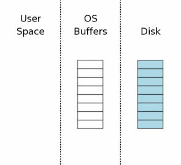The state of the computer when a database connection is first opened is shown conceptually by the diagram at the right. The area of the diagram on the extreme right (labeled "Disk") represents information stored on the mass storage device. Each rectangle is a sector. The blue color represents that the sectors contain original data. The middle area is the operating systems disk cache. At the onset of our example, the cache is cold and this is represented by leaving the rectangles of the disk cache empty. The left area of the diagram shows the content of memory for the process that is using SQLite. The database connection has just been opened and no information has been read yet, so the user space is empty.
3.2 Acquiring A Read Lock
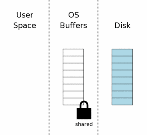Before SQLite can write to a database, it must first read the database to see what is there already. Even if it is just appending new data, SQLite still has to read in the database schema from the sqlite_master table so that it can know how to parse the INSERT statements and discover where in the database file the new information should be stored.
The first step toward reading from the database file is obtaining a shared lock on the database file. A "shared" lock allows two or more database connections to read from the database file at the same time. But a shared lock prevents another database connection from writing to the database file while we are reading it. This is necessary because if another database connection were writing to the database file at the same time we are reading from the database file, we might read some data before the change and other data after the change. This would make it appear as if the change made by the other process is not atomic.
Notice that the shared lock is on the operating system disk cache, not on the disk itself. File locks really are just flags within the operating system kernel, usually. (The details depend on the specific OS layer interface.) Hence, the lock will instantly vanish if the operating system crashes or if there is a power loss. It is usually also the case that the lock will vanish if the process that created the lock exits.
3.3 Reading Information Out Of The Database

After the shared lock is acquired, we can begin reading information from the database file. In this scenario, we are assuming a cold cache, so information must first be read from mass storage into the operating system cache then transferred from operating system cache into user space. On subsequent reads, some or all of the information might already be found in the operating system cache and so only the transfer to user space would be required.
Usually only a subset of the pages in the database file are read. In this example we are showing three pages out of eight being read. In a typical application, a database will have thousands of pages and a query will normally only touch a small percentage of those pages.
3.4 Obtaining A Reserved Lock
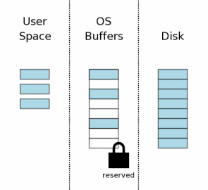Before making changes to the database, SQLite first obtains a "reserved" lock on the database file. A reserved lock is similar to a shared lock in that both a reserved lock and shared lock allow other processes to read from the database file. A single reserve lock can coexist with multiple shared locks from other processes. However, there can only be a single reserved lock on the database file. Hence only a single process can be attempting to write to the database at one time.
The idea behind a reserved lock is that it signals that a process intends to modify the database file in the near future but has not yet started to make the modifications. And because the modifications have not yet started, other processes can continue to read from the database. However, no other process should also begin trying to write to the database.
3.5 Creating A Rollback Journal File
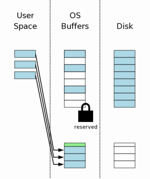Prior to making any changes to the database file, SQLite first creates a separate rollback journal file and writes into the rollback journal the original content of the database pages that are to be altered. The idea behind the rollback journal is that it contains all information needed to restore the database back to its original state.
The rollback journal contains a small header (shown in green in the diagram) that records the original size of the database file. So if a change causes the database file to grow, we will still know the original size of the database. The page number is stored together with each database page that is written into the rollback journal.
When a new file is created, most desktop operating systems (Windows, Linux, Mac OS X) will not actually write anything to disk. The new file is created in the operating systems disk cache only. The file is not created on mass storage until sometime later, when the operating system has a spare moment. This creates the impression to users that I/O is happening much faster than is possible when doing real disk I/O. We illustrate this idea in the diagram to the right by showing that the new rollback journal appears in the operating system disk cache only and not on the disk itself.
3.6 Changing Database Pages In User Space
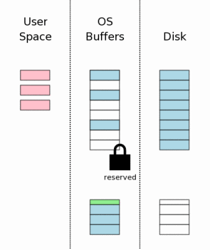After the original page content has been saved in the rollback journal, the pages can be modified in user memory. Each database connection has its own private copy of user space, so the changes that are made in user space are only visible to the database connection that is making the changes. Other database connections still see the information in operating system disk cache buffers which have not yet been changed. And so even though one process is busy modifying the database, other processes can continue to read their own copies of the original database content.
3.7 Flushing The Rollback Journal File To Mass Storage
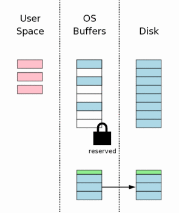The next step is to flush the content of the rollback journal file to nonvolatile storage. As we will see later, this is a critical step in insuring that the database can survive an unexpected power loss. This step also takes a lot of time, since writing to nonvolatile storage is normally a slow operation.
This step is usually more complicated than simply flushing the rollback journal to the disk. On most platforms two separate flush (or fsync()) operations are required. The first flush writes out the base rollback journal content. Then the header of the rollback journal is modified to show the number of pages in the rollback journal. Then the header is flushed to disk. The details on why we do this header modification and extra flush are provided in a later section of this paper.
3.8 Obtaining An Exclusive Lock
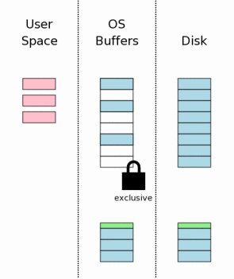Prior to making changes to the database file itself, we must obtain an exclusive lock on the database file. Obtaining an exclusive lock is really a two-step process. First SQLite obtains a "pending" lock. Then it escalates the pending lock to an exclusive lock.
A pending lock allows other processes that already have a shared lock to continue reading the database file. But it prevents new shared locks from being established. The idea behind a pending lock is to prevent writer starvation caused by a large pool of readers. There might be dozens, even hundreds, of other processes trying to read the database file. Each process acquires a shared lock before it starts reading, reads what it needs, then releases the shared lock. If, however, there are many different processes all reading from the same database, it might happen that a new process always acquires its shared lock before the previous process releases its shared lock. And so there is never an instant when there are no shared locks on the database file and hence there is never an opportunity for the writer to seize the exclusive lock. A pending lock is designed to prevent that cycle by allowing existing shared locks to proceed but blocking new shared locks from being established. Eventually all shared locks will clear and the pending lock will then be able to escalate into an exclusive lock.
3.9 Writing Changes To The Database File
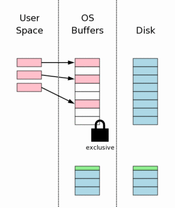Once an exclusive lock is held, we know that no other processes are reading from the database file and it is safe to write changes into the database file. Usually those changes only go as far as the operating systems disk cache and do not make it all the way to mass storage.
3.10 Flushing Changes To Mass Storage
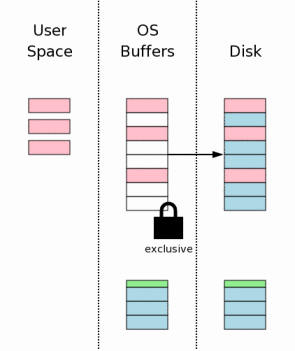Another flush must occur to make sure that all the database changes are written into nonvolatile storage. This is a critical step to ensure that the database will survive a power loss without damage. However, because of the inherent slowness of writing to disk or flash memory, this step together with the rollback journal file flush in section 3.7 above takes up most of the time required to complete a transaction commit in SQLite.
3.11 Deleting The Rollback Journal
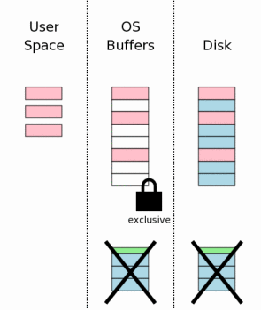After the database changes are all safely on the mass storage device, the rollback journal file is deleted. This is the instant where the transaction commits. If a power failure or system crash occurs prior to this point, then recovery processes to be described later make it appear as if no changes were ever made to the database file. If a power failure or system crash occurs after the rollback journal is deleted, then it appears as if all changes have been written to disk. Thus, SQLite gives the appearance of having made no changes to the database file or having made the complete set of changes to the database file depending on whether or not the rollback journal file exists.
Deleting a file is not really an atomic operation, but it appears to be from the point of view of a user process. A process is always able to ask the operating system "does this file exist?" and the process will get back a yes or no answer. After a power failure that occurs during a transaction commit, SQLite will ask the operating system whether or not the rollback journal file exists. If the answer is "yes" then the transaction is incomplete and is rolled back. If the answer is "no" then it means the transaction did commit.
The existence of a transaction depends on whether or not the rollback journal file exists and the deletion of a file appears to be an atomic operation from the point of view of a user-space process. Therefore, a transaction appears to be an atomic operation.
The act of deleting a file is expensive on many systems. As an optimization, SQLite can be configured to truncate the journal file to zero bytes in length or overwrite the journal file header with zeros. In either case, the resulting journal file is no longer capable of rolling back and so the transaction still commits. Truncating a file to zero length, like deleting a file, is assumed to be an atomic operation from the point of view of a user process. Overwriting the header of the journal with zeros is not atomic, but if any part of the header is malformed the journal will not roll back. Hence, one can say that the commit occurs as soon as the header is sufficiently changed to make it invalid. Typically this happens as soon as the first byte of the header is zeroed.
3.12 Releasing The Lock
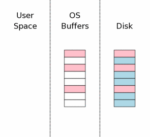The last step in the commit process is to release the exclusive lock so that other processes can once again start accessing the database file.
In the diagram at the right, we show that the information that was held in user space is cleared when the lock is released. This used to be literally true for older versions of SQLite. But more recent versions of SQLite keep the user space information in memory in case it might be needed again at the start of the next transaction. It is cheaper to reuse information that is already in local memory than to transfer the information back from the operating system disk cache or to read it off of the disk drive again. Prior to reusing the information in user space, we must first reacquire the shared lock and then we have to check to make sure that no other process modified the database file while we were not holding a lock. There is a counter in the first page of the database that is incremented every time the database file is modified. We can find out if another process has modified the database by checking that counter. If the database was modified, then the user space cache must be cleared and reread. But it is commonly the case that no changes have been made and the user space cache can be reused for a significant performance savings.
4.0 Rollback
An atomic commit is supposed to happen instantaneously. But the processing described above clearly takes a finite amount of time. Suppose the power to the computer were cut part way through the commit operation described above. In order to maintain the illusion that the changes were instantaneous, we have to "rollback" any partial changes and restore the database to the state it was in prior to the beginning of the transaction.
4.1 When Something Goes Wrong...
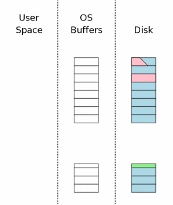Suppose the power loss occurred during step 3.10 above, while the database changes were being written to disk. After power is restored, the situation might be something like what is shown to the right. We were trying to change three pages of the database file but only one page was successfully written. Another page was partially written and a third page was not written at all.
The rollback journal is complete and intact on disk when the power is restored. This is a key point. The reason for the flush operation in step 3.7 is to make absolutely sure that all of the rollback journal is safely on nonvolatile storage prior to making any changes to the database file itself.
4.2 Hot Rollback Journals
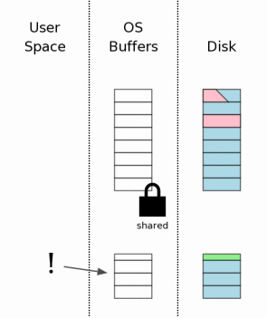The first time that any SQLite process attempts to access the database file, it obtains a shared lock as described in section 3.2 above. But then it notices that there is a rollback journal file present. SQLite then checks to see if the rollback journal is a "hot journal". A hot journal is a rollback journal that needs to be played back in order to restore the database to a sane state. A hot journal only exists when an earlier process was in the middle of committing a transaction when it crashed or lost power.
A rollback journal is a "hot" journal if all of the following are true:
- The rollback journal exists.
- The rollback journal is not an empty file.
- There is no reserved lock on the main database file.
- The header of the rollback journal is well-formed and in particular has not been zeroed out.
- The rollback journal does not contain the name of a master journal file (see section 5.5 below) or if does contain the name of a master journal, then that master journal file exists.
The presence of a hot journal is our indication that a previous process was trying to commit a transaction but it aborted for some reason prior to the completion of the commit. A hot journal means that the database file is in an inconsistent state and needs to be repaired (by rollback) prior to being used.
4.3 Obtaining An Exclusive Lock On The Database
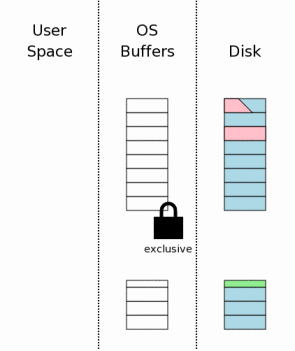The first step toward dealing with a hot journal is to obtain an exclusive lock on the database file. This prevents two or more processes from trying to rollback the same hot journal at the same time.
4.4 Rolling Back Incomplete Changes
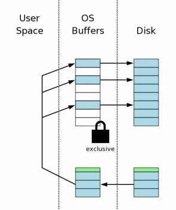Once a process obtains an exclusive lock, it is permitted to write to the database file. It then proceeds to read the original content of pages out of the rollback journal and write that content back to where it came from in the database file. Recall that the header of the rollback journal records the original size of the database file prior to the start of the aborted transaction. SQLite uses this information to truncate the database file back to its original size in cases where the incomplete transaction caused the database to grow. At the end of this step, the database should be the same size and contain the same information as it did before the start of the aborted transaction.
4.5 Deleting The Hot Journal
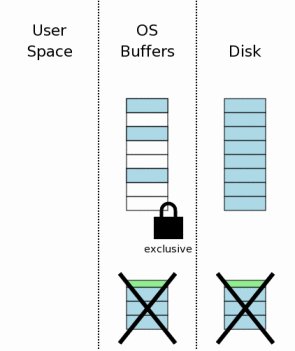After all information in the rollback journal has been played back into the database file (and flushed to disk in case we encounter yet another power failure), the hot rollback journal can be deleted.
As in section 3.11, the journal file might be truncated to zero length or its header might be overwritten with zeros as an optimization on systems where deleting a file is expensive. Either way, the journal is no longer hot after this step.
4.6 Continue As If The Uncompleted Writes Had Never Happened

The final recovery step is to reduce the exclusive lock back to a shared lock. Once this happens, the database is back in the state that it would have been if the aborted transaction had never started. Since all of this recovery activity happens completely automatically and transparently, it appears to the program using SQLite as if the aborted transaction had never begun.
5.0 Multi-file Commit
SQLite allows a single database connection to talk to two or more database files simultaneously through the use of the ATTACH DATABASE command. When multiple database files are modified within a single transaction, all files are updated atomically. In other words, either all of the database files are updated or else none of them are. Achieving an atomic commit across multiple database files is more complex that doing so for a single file. This section describes how SQLite works that bit of magic.
5.1 Separate Rollback Journals For Each Database
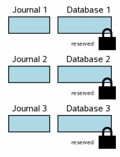When multiple database files are involved in a transaction, each database has its own rollback journal and each database is locked separately. The diagram at the right shows a scenario where three different database files have been modified within one transaction. The situation at this step is analogous to the single-file transaction scenario at step 3.6. Each database file has a reserved lock. For each database, the original content of pages that are being changed have been written into the rollback journal for that database, but the content of the journals have not yet been flushed to disk. No changes have been made to the database file itself yet, though presumably there are changes being held in user memory.
For brevity, the diagrams in this section are simplified from those that came before. Blue color still signifies original content and pink still signifies new content. But the individual pages in the rollback journal and the database file are not shown and we are not making the distinction between information in the operating system cache and information that is on disk. All of these factors still apply in a multi-file commit scenario. They just take up a lot of space in the diagrams and they do not add any new information, so they are omitted here.
5.2 The Master Journal File
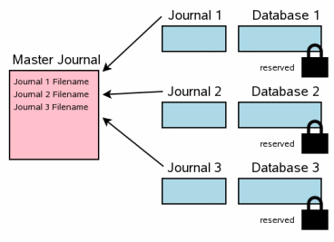The next step in a multi-file commit is the creation of a "master journal" file. The name of the master journal file is the same name as the original database filename (the database that was opened using the sqlite3_open() interface, not one of the ATTACHed auxiliary databases) with the text "-mjHHHHHHHH" appended where HHHHHHHH is a random 32-bit hexadecimal number. The random HHHHHHHH suffix changes for every new master journal.
(Nota bene: The formula for computing the master journal filename given in the previous paragraph corresponds to the implementation as of SQLite version 3.5.0. But this formula is not part of the SQLite specification and is subject to change in future releases.)
Unlike the rollback journals, the master journal does not contain any original database page content. Instead, the master journal contains the full pathnames for rollback journals for every database that is participating in the transaction.
After the master journal is constructed, its content is flushed to disk before any further actions are taken. On Unix, the directory that contains the master journal is also synced in order to make sure the master journal file will appear in the directory following a power failure.
The purpose of the master journal is to ensure that multi-file
transactions are atomic across a power-loss. But if the database files
have other settings that compromise integrity across a power-loss event
(such as PRAGMA synchronous=OFF or PRAGMA journal_mode=MEMORY) then
the creation of the master journal is omitted, as an optimization.
5.3 Updating Rollback Journal Headers
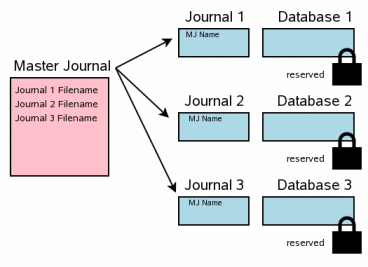The next step is to record the full pathname of the master journal file in the header of every rollback journal. Space to hold the master journal filename was reserved at the beginning of each rollback journal as the rollback journals were created.
The content of each rollback journal is flushed to disk both before and after the master journal filename is written into the rollback journal header. It is important to do both of these flushes. Fortunately, the second flush is usually inexpensive since typically only a single page of the journal file (the first page) has changed.
This step is analogous to step 3.7 in the single-file commit scenario described above.
5.4 Updating The Database Files
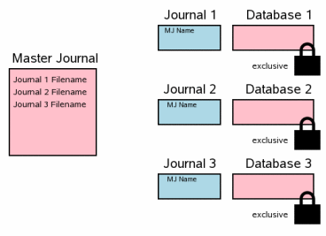Once all rollback journal files have been flushed to disk, it is safe to begin updating database files. We have to obtain an exclusive lock on all database files before writing the changes. After all the changes are written, it is important to flush the changes to disk so that they will be preserved in the event of a power failure or operating system crash.
This step corresponds to steps 3.8, 3.9, and 3.10 in the single-file commit scenario described previously.
5.5 Delete The Master Journal File
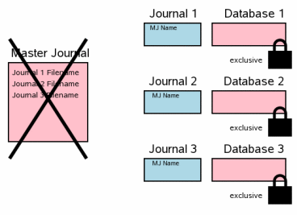The next step is to delete the master journal file. This is the point where the multi-file transaction commits. This step corresponds to step 3.11 in the single-file commit scenario where the rollback journal is deleted.
If a power failure or operating system crash occurs at this point, the transaction will not rollback when the system reboots even though there are rollback journals present. The difference is the master journal pathname in the header of the rollback journal. Upon restart, SQLite only considers a journal to be hot and will only playback the journal if there is no master journal filename in the header (which is the case for a single-file commit) or if the master journal file still exists on disk.
5.6 Clean Up The Rollback Journals
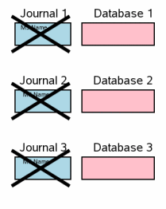The final step in a multi-file commit is to delete the individual rollback journals and drop the exclusive locks on the database files so that other processes can see the changes. This corresponds to step 3.12 in the single-file commit sequence.
The transaction has already committed at this point so timing is not critical in the deletion of the rollback journals. The current implementation deletes a single rollback journal then unlocks the corresponding database file before proceeding to the next rollback journal. But in the future we might change this so that all rollback journals are deleted before any database files are unlocked. As long as the rollback journal is deleted before its corresponding database file is unlocked it does not matter in what order the rollback journals are deleted or the database files are unlocked.
6.0 Additional Details Of The Commit Process
Section 3.0 above provides an overview of how atomic commit works in SQLite. But it glosses over a number of important details. The following subsections will attempt to fill in the gaps.
6.1 Always Journal Complete Sectors
When the original content of a database page is written into the rollback journal (as shown in section 3.5), SQLite always writes a complete sector of data, even if the page size of the database is smaller than the sector size. Historically, the sector size in SQLite has been hard coded to 512 bytes and since the minimum page size is also 512 bytes, this has never been an issue. But beginning with SQLite version 3.3.14, it is possible for SQLite to use mass storage devices with a sector size larger than 512 bytes. So, beginning with version 3.3.14, whenever any page within a sector is written into the journal file, all pages in that same sector are stored with it.
It is important to store all pages of a sector in the rollback journal in order to prevent database corruption following a power loss while writing the sector. Suppose that pages 1, 2, 3, and 4 are all stored in sector 1 and that page 2 is modified. In order to write the changes to page 2, the underlying hardware must also rewrite the content of pages 1, 3, and 4 since the hardware must write the complete sector. If this write operation is interrupted by a power outage, one or more of the pages 1, 3, or 4 might be left with incorrect data. Hence, to avoid lasting corruption to the database, the original content of all of those pages must be contained in the rollback journal.
6.2 Dealing With Garbage Written Into Journal Files
When data is appended to the end of the rollback journal, SQLite normally makes the pessimistic assumption that the file is first extended with invalid "garbage" data and that afterwards the correct data replaces the garbage. In other words, SQLite assumes that the file size is increased first and then afterwards the content is written into the file. If a power failure occurs after the file size has been increased but before the file content has been written, the rollback journal can be left containing garbage data. If after power is restored, another SQLite process sees the rollback journal containing the garbage data and tries to roll it back into the original database file, it might copy some of the garbage into the database file and thus corrupt the database file.
SQLite uses two defenses against this problem. In the first place, SQLite records the number of pages in the rollback journal in the header of the rollback journal. This number is initially zero. So during an attempt to rollback an incomplete (and possibly corrupt) rollback journal, the process doing the rollback will see that the journal contains zero pages and will thus make no changes to the database. Prior to a commit, the rollback journal is flushed to disk to ensure that all content has been synced to disk and there is no "garbage" left in the file, and only then is the page count in the header changed from zero to true number of pages in the rollback journal. The rollback journal header is always kept in a separate sector from any page data so that it can be overwritten and flushed without risking damage to a data page if a power outage occurs. Notice that the rollback journal is flushed to disk twice: once to write the page content and a second time to write the page count in the header.
The previous paragraph describes what happens when the synchronous pragma setting is "full".
PRAGMA synchronous=FULL;
The default synchronous setting is full so the above is what usually happens. However, if the synchronous setting is lowered to "normal", SQLite only flushes the rollback journal once, after the page count has been written. This carries a risk of corruption because it might happen that the modified (non-zero) page count reaches the disk surface before all of the data does. The data will have been written first, but SQLite assumes that the underlying filesystem can reorder write requests and that the page count can be burned into oxide first even though its write request occurred last. So as a second line of defense, SQLite also uses a 32-bit checksum on every page of data in the rollback journal. This checksum is evaluated for each page during rollback while rolling back a journal as described in section 4.4. If an incorrect checksum is seen, the rollback is abandoned. Note that the checksum does not guarantee that the page data is correct since there is a small but finite probability that the checksum might be right even if the data is corrupt. But the checksum does at least make such an error unlikely.
Note that the checksums in the rollback journal are not necessary if the synchronous setting is FULL. We only depend on the checksums when synchronous is lowered to NORMAL. Nevertheless, the checksums never hurt and so they are included in the rollback journal regardless of the synchronous setting.
6.3 Cache Spill Prior To Commit
The commit process shown in section 3.0 assumes that all database changes fit in memory until it is time to commit. This is the common case. But sometimes a larger change will overflow the user-space cache prior to transaction commit. In those cases, the cache must spill to the database before the transaction is complete.
At the beginning of a cache spill, the status of the database connection is as shown in step 3.6. Original page content has been saved in the rollback journal and modifications of the pages exist in user memory. To spill the cache, SQLite executes steps 3.7 through 3.9. In other words, the rollback journal is flushed to disk, an exclusive lock is acquired, and changes are written into the database. But the remaining steps are deferred until the transaction really commits. A new journal header is appended to the end of the rollback journal (in its own sector) and the exclusive database lock is retained, but otherwise processing returns to step 3.6. When the transaction commits, or if another cache spill occurs, steps 3.7 and 3.9 are repeated. (Step 3.8 is omitted on second and subsequent passes since an exclusive database lock is already held due to the first pass.)
A cache spill causes the lock on the database file to escalate from reserved to exclusive. This reduces concurrency. A cache spill also causes extra disk flush or fsync operations to occur and these operations are slow, hence a cache spill can seriously reduce performance. For these reasons a cache spill is avoided whenever possible.
7.0 Optimizations
Profiling indicates that for most systems and in most circumstances SQLite spends most of its time doing disk I/O. It follows then that anything we can do to reduce the amount of disk I/O will likely have a large positive impact on the performance of SQLite. This section describes some of the techniques used by SQLite to try to reduce the amount of disk I/O to a minimum while still preserving atomic commit.
7.1 Cache Retained Between Transactions
Step 3.12 of the commit process shows that once the shared lock has been released, all user-space cache images of database content must be discarded. This is done because without a shared lock, other processes are free to modify the database file content and so any user-space image of that content might become obsolete. Consequently, each new transaction would begin by rereading data which had previously been read. This is not as bad as it sounds at first since the data being read is still likely in the operating systems file cache. So the "read" is really just a copy of data from kernel space into user space. But even so, it still takes time.
Beginning with SQLite version 3.3.14 a mechanism has been added to try to reduce the needless rereading of data. In newer versions of SQLite, the data in the user-space pager cache is retained when the lock on the database file is released. Later, after the shared lock is acquired at the beginning of the next transaction, SQLite checks to see if any other process has modified the database file. If the database has been changed in any way since the lock was last released, the user-space cache is erased at that point. But commonly the database file is unchanged and the user-space cache can be retained, and some unnecessary read operations can be avoided.
In order to determine whether or not the database file has changed, SQLite uses a counter in the database header (in bytes 24 through 27) which is incremented during every change operation. SQLite saves a copy of this counter prior to releasing its database lock. Then after acquiring the next database lock it compares the saved counter value against the current counter value and erases the cache if the values are different, or reuses the cache if they are the same.
7.2 Exclusive Access Mode
SQLite version 3.3.14 adds the concept of "Exclusive Access Mode". In exclusive access mode, SQLite retains the exclusive database lock at the conclusion of each transaction. This prevents other processes from accessing the database, but in many deployments only a single process is using a database so this is not a serious problem. The advantage of exclusive access mode is that disk I/O can be reduced in three ways:
It is not necessary to increment the change counter in the database header for transactions after the first transaction. This will often save a write of page one to both the rollback journal and the main database file.
No other processes can change the database so there is never a need to check the change counter and clear the user-space cache at the beginning of a transaction.
Each transaction can be committed by overwriting the rollback journal header with zeros rather than deleting the journal file. This avoids having to modify the directory entry for the journal file and it avoids having to deallocate disk sectors associated with the journal. Furthermore, the next transaction will overwrite existing journal file content rather than append new content and on most systems overwriting is much faster than appending.
The third optimization, zeroing the journal file header rather than deleting the rollback journal file, does not depend on holding an exclusive lock at all times. This optimization can be set independently of exclusive lock mode using the journal_mode pragma as described in section 7.6 below.
7.3 Do Not Journal Freelist Pages
When information is deleted from an SQLite database, the pages used to hold the deleted information are added to a "freelist". Subsequent inserts will draw pages off of this freelist rather than expanding the database file.
Some freelist pages contain critical data; specifically the locations of other freelist pages. But most freelist pages contain nothing useful. These latter freelist pages are called "leaf" pages. We are free to modify the content of a leaf freelist page in the database without changing the meaning of the database in any way.
Because the content of leaf freelist pages is unimportant, SQLite avoids storing leaf freelist page content in the rollback journal in step 3.5 of the commit process. If a leaf freelist page is changed and that change does not get rolled back during a transaction recovery, the database is not harmed by the omission. Similarly, the content of a new freelist page is never written back into the database at step 3.9 nor read from the database at step 3.3. These optimizations can greatly reduce the amount of I/O that occurs when making changes to a database file that contains free space.
7.4 Single Page Updates And Atomic Sector Writes
Beginning in SQLite version 3.5.0, the new Virtual File System (VFS) interface contains a method named xDeviceCharacteristics which reports on special properties that the underlying mass storage device might have. Among the special properties that xDeviceCharacteristics might report is the ability of to do an atomic sector write.
Recall that by default SQLite assumes that sector writes are linear but not atomic. A linear write starts at one end of the sector and changes information byte by byte until it gets to the other end of the sector. If a power loss occurs in the middle of a linear write then part of the sector might be modified while the other end is unchanged. In an atomic sector write, either the entire sector is overwritten or else nothing in the sector is changed.
We believe that most modern disk drives implement atomic sector writes. When power is lost, the drive uses energy stored in capacitors and/or the angular momentum of the disk platter to provide power to complete any operation in progress. Nevertheless, there are so many layers in between the write system call and the on-board disk drive electronics that we take the safe approach in both Unix and w32 VFS implementations and assume that sector writes are not atomic. On the other hand, device manufacturers with more control over their filesystems might want to consider enabling the atomic write property of xDeviceCharacteristics if their hardware really does do atomic writes.
When sector writes are atomic and the page size of a database is the same as a sector size, and when there is a database change that only touches a single database page, then SQLite skips the whole journaling and syncing process and simply writes the modified page directly into the database file. The change counter in the first page of the database file is modified separately since no harm is done if power is lost before the change counter can be updated.
7.5 Filesystems With Safe Append Semantics
Another optimization introduced in SQLite version 3.5.0 makes use of "safe append" behavior of the underlying disk. Recall that SQLite assumes that when data is appended to a file (specifically to the rollback journal) that the size of the file is increased first and that the content is written second. So if power is lost after the file size is increased but before the content is written, the file is left containing invalid "garbage" data. The xDeviceCharacteristics method of the VFS might, however, indicate that the filesystem implements "safe append" semantics. This means that the content is written before the file size is increased so that it is impossible for garbage to be introduced into the rollback journal by a power loss or system crash.
When safe append semantics are indicated for a filesystem, SQLite always stores the special value of -1 for the page count in the header of the rollback journal. The -1 page count value tells any process attempting to rollback the journal that the number of pages in the journal should be computed from the journal size. This -1 value is never changed. So that when a commit occurs, we save a single flush operation and a sector write of the first page of the journal file. Furthermore, when a cache spill occurs we no longer need to append a new journal header to the end of the journal; we can simply continue appending new pages to the end of the existing journal.
7.6 Persistent Rollback Journals
Deleting a file is an expensive operation on many systems. So as an optimization, SQLite can be configured to avoid the delete operation of section 3.11. Instead of deleting the journal file in order to commit a transaction, the file is either truncated to zero bytes in length or its header is overwritten with zeros. Truncating the file to zero length saves having to make modifications to the directory containing the file since the file is not removed from the directory. Overwriting the header has the additional savings of not having to update the length of the file (in the "inode" on many systems) and not having to deal with newly freed disk sectors. Furthermore, at the next transaction the journal will be created by overwriting existing content rather than appending new content onto the end of a file, and overwriting is often much faster than appending.
SQLite can be configured to commit transactions by overwriting the journal header with zeros instead of deleting the journal file by setting the "PERSIST" journaling mode using the journal_mode PRAGMA. For example:
PRAGMA journal_mode=PERSIST;
The use of persistent journal mode provides a noticeable performance improvement on many systems. Of course, the drawback is that the journal files remain on the disk, using disk space and cluttering directories, long after the transaction commits. The only safe way to delete a persistent journal file is to commit a transaction with journaling mode set to DELETE:
PRAGMA journal_mode=DELETE; BEGIN EXCLUSIVE; COMMIT;
Beware of deleting persistent journal files by any other means since the journal file might be hot, in which case deleting it will corrupt the corresponding database file.
Beginning in SQLite version 3.6.4, the TRUNCATE journal mode is also supported:
PRAGMA journal_mode=TRUNCATE;
In truncate journal mode, the transaction is committed by truncating the journal file to zero length rather than deleting the journal file (as in DELETE mode) or by zeroing the header (as in PERSIST mode). TRUNCATE mode shares the advantage of PERSIST mode that the directory that contains the journal file and database does not need to be updated. Hence truncating a file is often faster than deleting it. TRUNCATE has the additional advantage that it is not followed by a system call (ex: fsync()) to synchronize the change to disk. It might be safer if it did. But on many modern filesystems, a truncate is an atomic and synchronous operation and so we think that TRUNCATE will usually be safe in the face of power failures. If you are uncertain about whether or not TRUNCATE will be synchronous and atomic on your filesystem and it is important to you that your database survive a power loss or operating system crash that occurs during the truncation operation, then you might consider using a different journaling mode.
On embedded systems with synchronous filesystems, TRUNCATE results in slower behavior than PERSIST. The commit operation is the same speed. But subsequent transactions are slower following a TRUNCATE because it is faster to overwrite existing content than to append to the end of a file. New journal file entries will always be appended following a TRUNCATE but will usually overwrite with PERSIST.
8.0 Testing Atomic Commit Behavior
The developers of SQLite are confident that it is robust in the face of power failures and system crashes because the automatic test procedures do extensive checks on the ability of SQLite to recover from simulated power loss. We call these the "crash tests".
Crash tests in SQLite use a modified VFS that can simulate the kinds of filesystem damage that occur during a power loss or operating system crash. The crash-test VFS can simulate incomplete sector writes, pages filled with garbage data because a write has not completed, and out of order writes, all occurring at varying points during a test scenario. Crash tests execute transactions over and over, varying the time at which a simulated power loss occurs and the properties of the damage inflicted. Each test then reopens the database after the simulated crash and verifies that the transaction either occurred completely or not at all and that the database is in a completely consistent state.
The crash tests in SQLite have discovered a number of very subtle bugs (now fixed) in the recovery mechanism. Some of these bugs were very obscure and unlikely to have been found using only code inspection and analysis techniques. From this experience, the developers of SQLite feel confident that any other database system that does not use a similar crash test system likely contains undetected bugs that will lead to database corruption following a system crash or power failure.
9.0 Things That Can Go Wrong
The atomic commit mechanism in SQLite has proven to be robust, but it can be circumvented by a sufficiently creative adversary or a sufficiently broken operating system implementation. This section describes a few of the ways in which an SQLite database might be corrupted by a power failure or system crash. (See also: How To Corrupt Your Database Files.)
9.1 Broken Locking Implementations
SQLite uses filesystem locks to make sure that only one process and database connection is trying to modify the database at a time. The filesystem locking mechanism is implemented in the VFS layer and is different for every operating system. SQLite depends on this implementation being correct. If something goes wrong and two or more processes are able to write the same database file at the same time, severe damage can result.
We have received reports of implementations of both Windows network filesystems and NFS in which locking was subtly broken. We can not verify these reports, but as locking is difficult to get right on a network filesystem we have no reason to doubt them. You are advised to avoid using SQLite on a network filesystem in the first place, since performance will be slow. But if you must use a network filesystem to store SQLite database files, consider using a secondary locking mechanism to prevent simultaneous writes to the same database even if the native filesystem locking mechanism malfunctions.
The versions of SQLite that come preinstalled on Apple Mac OS X computers contain a version of SQLite that has been extended to use alternative locking strategies that work on all network filesystems that Apple supports. These extensions used by Apple work great as long as all processes are accessing the database file in the same way. Unfortunately, the locking mechanisms do not exclude one another, so if one process is accessing a file using (for example) AFP locking and another process (perhaps on a different machine) is using dot-file locks, the two processes might collide because AFP locks do not exclude dot-file locks or vice versa.
9.2 Incomplete Disk Flushes
SQLite uses the fsync() system call on Unix and the FlushFileBuffers() system call on w32 in order to sync the file system buffers onto disk oxide as shown in step 3.7 and step 3.10. Unfortunately, we have received reports that neither of these interfaces works as advertised on many systems. We hear that FlushFileBuffers() can be completely disabled using registry settings on some Windows versions. Some historical versions of Linux contain versions of fsync() which are no-ops on some filesystems, we are told. Even on systems where FlushFileBuffers() and fsync() are said to be working, often the IDE disk control lies and says that data has reached oxide while it is still held only in the volatile control cache.
On the Mac, you can set this pragma:
PRAGMA fullfsync=ON;
Setting fullfsync on a Mac will guarantee that data really does get pushed out to the disk platter on a flush. But the implementation of fullfsync involves resetting the disk controller. And so not only is it profoundly slow, it also slows down other unrelated disk I/O. So its use is not recommended.
9.3 Partial File Deletions
SQLite assumes that file deletion is an atomic operation from the point of view of a user process. If power fails in the middle of a file deletion, then after power is restored SQLite expects to see either the entire file with all of its original data intact, or it expects not to find the file at all. Transactions may not be atomic on systems that do not work this way.
9.4 Garbage Written Into Files
SQLite database files are ordinary disk files that can be opened and written by ordinary user processes. A rogue process can open an SQLite database and fill it with corrupt data. Corrupt data might also be introduced into an SQLite database by bugs in the operating system or disk controller; especially bugs triggered by a power failure. There is nothing SQLite can do to defend against these kinds of problems.
9.5 Deleting Or Renaming A Hot Journal
If a crash or power loss does occur and a hot journal is left on the disk, it is essential that the original database file and the hot journal remain on disk with their original names until the database file is opened by another SQLite process and rolled back. During recovery at step 4.2 SQLite locates the hot journal by looking for a file in the same directory as the database being opened and whose name is derived from the name of the file being opened. If either the original database file or the hot journal have been moved or renamed, then the hot journal will not be seen and the database will not be rolled back.
We suspect that a common failure mode for SQLite recovery happens like this: A power failure occurs. After power is restored, a well-meaning user or system administrator begins looking around on the disk for damage. They see their database file named "important.data". This file is perhaps familiar to them. But after the crash, there is also a hot journal named "important.data-journal". The user then deletes the hot journal, thinking that they are helping to cleanup the system. We know of no way to prevent this other than user education.
If there are multiple (hard or symbolic) links to a database file, the journal will be created using the name of the link through which the file was opened. If a crash occurs and the database is opened again using a different link, the hot journal will not be located and no rollback will occur.
Sometimes a power failure will cause a filesystem to be corrupted such that recently changed filenames are forgotten and the file is moved into a "/lost+found" directory. When that happens, the hot journal will not be found and recovery will not occur. SQLite tries to prevent this by opening and syncing the directory containing the rollback journal at the same time it syncs the journal file itself. However, the movement of files into /lost+found can be caused by unrelated processes creating unrelated files in the same directory as the main database file. And since this is out from under the control of SQLite, there is nothing that SQLite can do to prevent it. If you are running on a system that is vulnerable to this kind of filesystem namespace corruption (most modern journalling filesystems are immune, we believe) then you might want to consider putting each SQLite database file in its own private subdirectory.
10.0 Future Directions And Conclusion
Every now and then someone discovers a new failure mode for the atomic commit mechanism in SQLite and the developers have to put in a patch. This is happening less and less and the failure modes are becoming more and more obscure. But it would still be foolish to suppose that the atomic commit logic of SQLite is entirely bug-free. The developers are committed to fixing these bugs as quickly as they might be found.
The developers are also on the lookout for new ways to optimize the commit mechanism. The current VFS implementations for Unix (Linux and Mac OS X) and Windows make pessimistic assumptions about the behavior of those systems. After consultation with experts on how these systems work, we might be able to relax some of the assumptions on these systems and allow them to run faster. In particular, we suspect that most modern filesystems exhibit the safe append property and that many of them might support atomic sector writes. But until this is known for certain, SQLite will take the conservative approach and assume the worst.